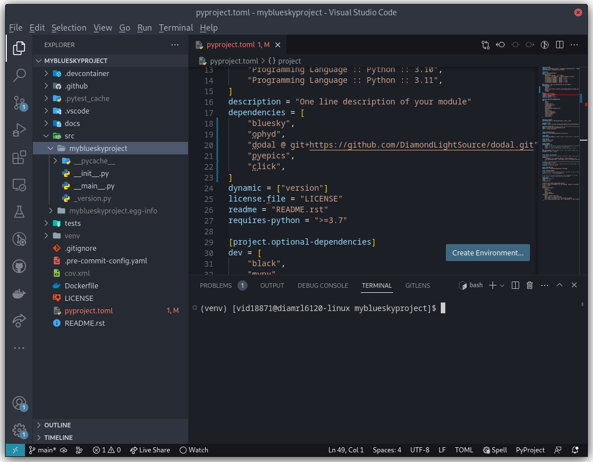
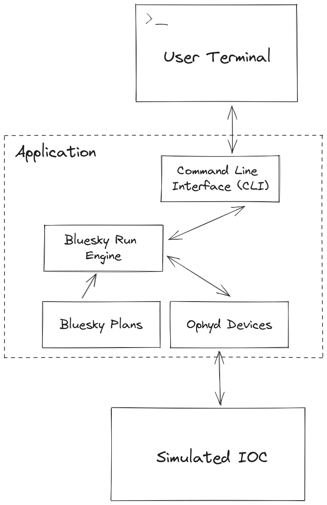

Setup your own Bluesky Project#
While it is useful to play with real hardware, the limitations of availability and time may mean that developers wish to use simulated hardware.
This page, while strictly not related to the test rigs, instructs developers on how to setup their own Python project, install all of the relevant dependencies and import bluesky running against simulated hardware.
Setting up a new project#
Note
For performance, it is recommended that you put your project somewhere on /scratch rather than your home directory, which will be very slow and fill up quickly!
The easiest way to setup a new project is to use the python skeleton, which includes a lot of the tooling etc. for free.
module load python/3.11 # Only required on DLS workstations
python3 -m pip install --user python3-pip-skeleton
cd <directory where you want to put your project>
~/.local/bin/python3-pip-skeleton new --org DiamondLightSource <name of project>
We recommend development with Microsoft Visual Studio Code, although if you have your own IDE preference and want to set it up yourself, feel free to skip the rest of this section. Otherwise:
module load vscode # Only required for DLS workstations
code <your project directory>
This will open a new vscode window. Access all commands via CTRL-SHIFT-P and search for “Create new terminal” to open an integrated terminal in the IDE. You can either setup a Python virtual environment or a developer container.
Note
Developer containers are not available on RHEL7
For a virtual environment:
cd <your project>
python3.11 -m venv venv # Create a new virtual env in a directory called <your project>/venv
source venv/bin/activate # Activate the venv for your terminal session
pip install -e '.[dev]' # Install your project and it's dependencies (including development/testing dependencies) into venv
Finally, in vscode, press CTRL-SHIFT-P and search for “Python: Select Interpreter”, use this to tell vscode which Python executable you will be using. Point it to <your project>/venv/bin/python.
Installing Libraries#
Open <your project>/pyproject.toml and find the entry labelled "dependencies", add a series Bluesky related libraries so it looks something like this:
dependencies = [
"bluesky",
"ophyd",
"dodal @ git+https://github.com/DiamondLightSource/dodal.git",
"pyepics",
"click"
]
Then run:
pip install -e '.[dev]' # Install/update dependencies in venv
This is a minimal set of libraries to get you started. One of them, dodal, includes the logic for controlling the DLS simulated AreaDetector and motors.
If you’ve followed along so far, your project should look something like this:
{kind=link}
Building an Example Application#
Now to build a very simple application which replicates (some of) the GDA scan command. Here are its components:
{kind=link}
Component #1: The Command Line Interface#
This part of the application simply takes the user input, turns it into a machine-readable model and passes it to the business logic (bluesky). It’s made using click, a very user-friendly CLI library that you installed in the dependencies section earlier:
Edit the file: <your project>/src/<your project>/__main__.py:
from pprint import pprint
import click
from . import __version__
# Boilerplate to set up a group of click commands
@click.group(invoke_without_command=True)
@click.version_option(version=__version__, prog_name="htss")
@click.pass_context
def main(ctx) -> None:
"""Simple bluesky utility"""
if ctx.invoked_subcommand is None:
print("Please run a command, run with --help for help")
# These decorators define the scan command and its arguments,
# including information displayed in any help message.
# This means the scan command is invoked via
# python -m <project name> motor start stop step detectors
@main.command(name="scan")
@click.argument("motor", type=str)
@click.argument("start", type=float)
@click.argument("stop", type=float)
@click.argument("step", type=float)
@click.argument("detectors", type=str, nargs=-1)
def scan(
motor: str,
start: float,
stop: float,
step: float,
detectors: tuple[str, ...],
) -> None:
"""Run a scan
MOTOR: Name of the motor to move
START: Start position of the motor
STOP: Final position of the motor
STEP: Distance the motor moves at each step
DETECTORS: Names of detectors that should acquire data at each point, separate
by space if more than one
"""
# We have not yet implemented our scan logic, for now
# just print out the parameters the user put in
print("Pretending to run a scan")
pprint(
{
"motor": motor,
"start": start,
"stop": stop,
"step": step,
"detectors": detectors,
}
)
# test with: python -m myblueskyproject
if __name__ == "__main__":
main()
There is no scan logic yet, but you can now run some commands:
python -m myblueskyproject scan --help # Should print out a useful help message detailing how to use your scan command
python -m myblueskyproject scan x 0 10 0.1 adsim # Won't run a scan yet, will just print out what it intends to do
Component #2: The Ophyd Devices#
These will communicate with via hardware via EPICS to run your scan. This tutorial targets the DLS simulated AreaDetector and motors, which can be run via TBD.
Once they are up and running, you can use Ophyd devices from dodal to control them. Create a new file <your project>/src/<your project>/devices.py:
import socket
from dodal.adsim import AdSimDetector
from ophyd import Device, EpicsMotor
class DeviceRepository:
"""
Class to hold and retrieve all devices that the application may need
"""
_devices: dict[str, Device]
def __init__(self) -> None:
self._devices = {}
self.make_devices()
def get_device(self, name: str) -> Device:
"""
Give the user a device with the name supplied. If there
is not device under that name, raise a KeyError
Args:
name: The name of the device
Returns:
Device: An Ophyd device representing some hardware
"""
return self._devices[name]
def make_devices(self) -> None:
"""
Initialize all devices and connect to IOCs
"""
# Simulated AreaDetector uses the workstation name
# in its PVs
workstation_name = socket.gethostname().split(".")[0]
# Create devices representing motor and detector PVs
self._devices = {
"adsim": AdSimDetector(
name="adsim",
prefix=f"{workstation_name}-AD-SIM-01:",
),
"x": EpicsMotor(
name="x",
prefix=f"{workstation_name}-MO-SIM-01:M1",
),
"y": EpicsMotor(
name="y",
prefix=f"{workstation_name}-MO-SIM-01:M2",
),
"z": EpicsMotor(
name="z",
prefix=f"{workstation_name}-MO-SIM-01:M3",
),
"theta": EpicsMotor(
name="theta",
prefix=f"{workstation_name}-MO-SIM-01:M4",
),
"load": EpicsMotor(
name="load",
prefix=f"{workstation_name}-MO-SIM-01:M5",
),
**self._devices,
}
# Make all devices check that their PVs actually exist
for device in self._devices.values():
device.wait_for_connection()
This is a simple class to hold and connect the devices to hardware, we can edit our cli to use it, edit <your project>/src/<your project>/__main__.py and add to the scan function:
Don’t forget to also import DeviceRepository.
# These decorators define the scan command and its arguments,
# including information displayed in any help message.
# This means the scan command is invoked via
# python -m <project name> motor start stop step detectors
@main.command(name="scan")
@click.argument("motor", type=str)
@click.argument("start", type=float)
@click.argument("stop", type=float)
@click.argument("step", type=float)
@click.argument("detectors", type=str, nargs=-1)
def scan(
motor: str,
start: float,
stop: float,
step: float,
detectors: tuple[str, ...],
) -> None:
"""Run a scan
MOTOR: Name of the motor to move
START: Start position of the motor
STOP: Final position of the motor
STEP: Distance the motor moves at each step
DETECTORS: Names of detectors that should acquire data at each point, separate
by space if more than one
"""
# We have not yet implemented our scan logic, for now
# just print out the parameters the user put in
print("Pretending to run a scan")
devices = DeviceRepository()
actual_motor = devices.get_device(motor)
actual_detectors = [
devices.get_device(detector_name) for detector_name in detectors
]
pprint(
{
"motor": actual_motor,
"start": start,
"stop": stop,
"step": step,
"detectors": actual_detectors,
}
)
Now if you run the previous command it should connect to the detector and print out a lot more information. Remember you may have to set the EPICS ports:
export EPICS_CA_SERVER_PORT=6064
export EPICS_CA_REPEATER_PORT=6065
python -m myblueskyproject scan x 0 10 0.1 adsim
Component #3 & #4: The Plan and RunEngine#
There is a built-in Bluesky plan for running scans, although it doesn’t take exactly the same parameters as the GDA scan command. It is easy to wrap it in another plan that does, however.
Create a new file <your project>/src/<your project>/plans.py:
from typing import Generator
import bluesky.plans as plans
from bluesky.protocols import Movable, Readable
def gda_style_scan(
motor: Movable,
start: float,
stop: float,
step: float,
detectors: list[Readable],
) -> Generator:
"""
Bluesky plan that runs a scan with similar parameters to the GDA scan command.
Args:
motor: Motor to move
start: Start position
stop: Final position
step: Amount to move motor at each step
detectors: Detectors that should acquire data at each step
Yields:
Generator: A bluesky plan that can be passed to a RunEngine
"""
# GDA takes the step size, bluesky takes the number of steps,
# we must convert between them
length_of_travel = abs(stop - start)
number_of_steps = max(1, int(length_of_travel / abs(step)))
# Actually run a scan here
yield from plans.scan(detectors, motor, start, stop, number_of_steps)
The final step is to create a RunEngine and pass this plan to it. Add the following imports to <your project>/src/<your project>/__main__.py:
from pprint import pprint
import click
from bluesky import RunEngine
from . import __version__
from .devices import DeviceRepository
from .plans import gda_style_scan
Then edit the scan function in the same file again:
# These decorators define the scan command and its arguments,
# including information displayed in any help message.
# This means the scan command is invoked via
# python -m <project name> motor start stop step detectors
@main.command(name="scan")
@click.argument("motor", type=str)
@click.argument("start", type=float)
@click.argument("stop", type=float)
@click.argument("step", type=float)
@click.argument("detectors", type=str, nargs=-1)
def scan(
motor: str,
start: float,
stop: float,
step: float,
detectors: tuple[str, ...],
) -> None:
"""Run a scan
MOTOR: Name of the motor to move
START: Start position of the motor
STOP: Final position of the motor
STEP: Distance the motor moves at each step
DETECTORS: Names of detectors that should acquire data at each point, separate
by space if more than one
"""
# We have not yet implemented our scan logic, for now
# just print out the parameters the user put in
print("Pretending to run a scan")
# Create a run engine
run_engine = RunEngine()
# Create and load devices
devices = DeviceRepository()
actual_motor = devices.get_device(motor)
actual_detectors = [
devices.get_device(detector_name) for detector_name in detectors
]
# Create a sequence of instructions by applying the devices to the plan,
# tell the RunEngine to execute them
plan_sequence = gda_style_scan(
actual_motor,
start,
stop,
step,
actual_detectors,
)
scan_id = run_engine(plan_sequence)
# Print out the scan ID
print(f"Scan completed with ID: {scan_id}")
Now the scan should run if you run run this command, it will print out a unique scan ID at the end.
export EPICS_CA_SERVER_PORT=6064
export EPICS_CA_REPEATER_PORT=6065
python -m myblueskyproject scan x 0 10 0.1 adsim
Ideas for Next Steps#
And you’re done!
Feel free to add to your project, perhaps consulting the Bluesky documentation. Here are some ideas to get you started:
Add another command, perhaps one that just takes pictures with the detector using no motors, start with the count plan.
Add some feedback via the terminal like GDA has, see Live Visualization and Processing.
Make the application capable of running a sequence of plans loaded from a file.
Add a REST API to control the application, for example using FastAPI.